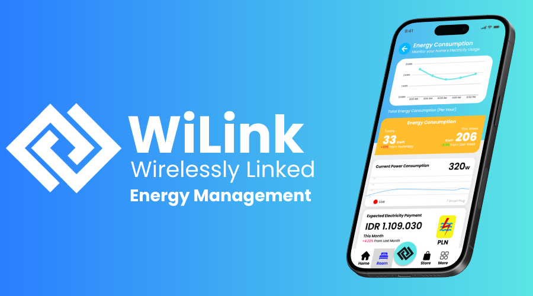
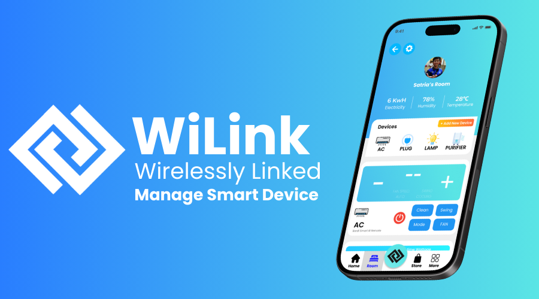
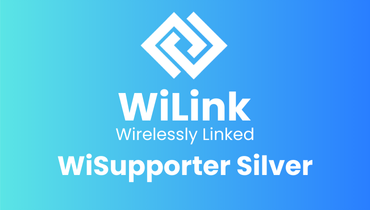
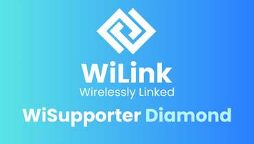
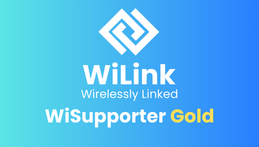

Wilink membedakan dirinya dari aplikasi smart home lainnya dengan fitur integrasi energi terbarukan dan fokus pada pengelolaan energi yang efisien. Selain menawarkan kontrol perangkat pintar seperti lampu dan AC, Wilink juga memungkinkan pengguna untuk memantau dan mengatur konsumsi energi dari sumber terbarukan seperti panel surya. Ini menjadikannya solusi komprehensif yang mendukung tujuan keberlanjutan dan efisiensi energi dalam konteks smart city.
Urun Dana
Wilink: Your smart home, seamlessly connected.
Aplikasi management smart home terkemuka

Populer
Unggulan
Aplikasi
Teknologi

Team Arikappucino
7 Desember 2023
Terverifikasi
Target Urun Dana
Nilai Pendanaan:
IDR 19.750.000
Sumber Pendanaan:
35 Kontribusi
Waktu Pendanaan:
30 Hari
Target Terpenuhi
35 Orang Berkontribusi
30 Hari Berlalu
Deskripsi
Di era digital saat ini, kemajuan teknologi informasi dan komunikasi telah mendorong
perkembangan
konsep "smart city" yang bertujuan untuk menciptakan kota-kota yang lebih efisien dan
berkelanjutan.
Salah satu komponen penting dari smart city adalah "smart home" atau rumah pintar, yang
memungkinkan
penghuni untuk mengelola dan mengontrol perangkat rumah mereka dengan teknologi canggih.
Meskipun
banyak aplikasi smart home tersedia, banyak dari mereka masih memiliki kekurangan, terutama
dalam
hal integrasi dengan sumber energi terbarukan. Hal ini membatasi potensi untuk mengoptimalkan
efisiensi energi dan dampak lingkungan positif yang dapat diberikan oleh rumah pintar.
Wilink, singkatan dari "Wirelessly Linked," merupakan solusi inovatif yang dirancang untuk
mengatasi
kekurangan-kekurangan ini. Aplikasi ini menawarkan integrasi menyeluruh antara perangkat smart
home
dengan sistem manajemen energi, termasuk energi terbarukan seperti panel surya. Dengan WiLink,
pengguna dapat mengelola konsumsi energi, mengontrol perangkat pintar, dan memantau penggunaan
energi secara efisien dari satu platform yang terhubung secara nirkabel. Ini memungkinkan
pengguna
untuk mengoptimalkan pengalaman smart home mereka dengan cara yang lebih terintegrasi dan ramah
lingkungan.
Wilink dilengkapi dengan berbagai fitur canggih untuk meningkatkan pengalaman pengguna dalam
mengelola rumah pintar. Fitur utama meliputi pengaturan konsumsi energi dari sumber listrik dan
energi terbarukan, kontrol perangkat pintar, serta integrasi dengan toko produk smart home.
Aplikasi
ini juga menyediakan fitur otomatisasi untuk mengatur jadwal perangkat, serta tips hemat energi
yang
berguna untuk pengguna. Desain antarmuka pengguna (UI/UX) Wilink dirancang agar intuitif dan
mudah
digunakan, memungkinkan pengguna untuk dengan cepat menemukan dan memanfaatkan berbagai fitur
yang
tersedia.
Penggunaan Wilink memberikan manfaat signifikan bagi pengguna, termasuk penghematan waktu dan
tenaga
dalam mengelola perangkat rumah pintar. Dengan kemampuan untuk mengontrol berbagai aspek rumah
dari
satu aplikasi, pengguna dapat lebih mudah mengatur pencahayaan, temperatur, dan sistem keamanan.
Fitur otomatisasi dan saran hemat energi yang disediakan membantu mengurangi konsumsi energi dan
biaya terkait, sambil berkontribusi pada tujuan lingkungan yang lebih besar. Wilink mendukung
berbagai kelompok pengguna, termasuk generasi muda, lansia, orang dengan keterbatasan fisik, dan
mereka yang peduli dengan efisiensi energi.
Wilink adalah solusi komprehensif untuk mengelola dan mengoptimalkan rumah pintar dalam konteks
smart city. Dengan integrasi yang mulus antara kontrol perangkat pintar dan manajemen energi
terbarukan, Wilink tidak hanya meningkatkan efisiensi energi dan kualitas hidup pengguna, tetapi
juga mendukung tujuan keberlanjutan lingkungan. Aplikasi ini menawarkan kemudahan, efisiensi,
dan
aksesibilitas yang dibutuhkan untuk menciptakan pengalaman smart home yang lebih terhubung dan
ramah
lingkungan. Wilink berpotensi menjadi alat yang penting dalam mewujudkan kota-kota pintar yang
lebih
efisien dan berkelanjutan.
Pertanyaan yang Sering Diajukan (FAQ)
-
-
Wilink menjamin kualitas dan keberhasilan proyek melalui serangkaian langkah pengembangan dan evaluasi yang ketat. Tim pengembang kami terdiri dari profesional berpengalaman di bidang teknologi smart home dan energi terbarukan. Kami juga melakukan pengujian menyeluruh untuk memastikan aplikasi berfungsi dengan baik di berbagai perangkat dan lingkungan. Selain itu, kami berkomitmen untuk transparansi dengan menyediakan pembaruan rutin kepada para investor dan pengguna tentang kemajuan dan pencapaian proyek.
-
Wilink sangat memperhatikan keamanan data pengguna. Aplikasi ini dilengkapi dengan protokol keamanan yang ketat untuk melindungi informasi pribadi dan data penggunaan energi. Semua komunikasi antar perangkat dan server Wilink dienkripsi untuk mencegah akses tidak sah. Selain itu, Wilink secara rutin melakukan audit keamanan dan pembaruan sistem untuk memastikan bahwa data pengguna tetap aman dari ancaman siber.
-
Jika kampanye urun dana Wilink tidak mencapai target pendanaan yang ditetapkan, kami akan mengikuti ketentuan yang berlaku di platform crowdfunding yang kami gunakan. Biasanya, ini berarti bahwa dana yang sudah diinvestasikan akan dikembalikan kepada para investor. Namun, kami tetap berkomitmen untuk mengembangkan Wilink dan akan mencari alternatif pendanaan lain untuk memastikan proyek ini dapat terus berjalan dan mencapai tujuannya.
Mengenal Inovator
Team Arikappucino
1
Petisi diajukan
1
Urun Dana Diajukan
4
Tanda Tangan Petisi
1
Kontribusi Urun dana
Biodata
Kami adalah tim developer yang memiliki visi untuk meningkatkan efisiensi dalam berbagai aspek kehidupan sehari-hari melalui penerapan teknologi canggih. Dengan semangat inovasi dan dedikasi tinggi, kami berusaha untuk menciptakan solusi yang tidak hanya mempermudah rutinitas harian, tetapi juga meningkatkan produktivitas dan kualitas hidup.
Inovator Unggulan
Bergabung pada 1 Desember 2023
Linimasa Pengembangan
Q1 2023: Konsep dan Perencanaan Awal
Pada Q1 2023, tahap awal melibatkan definisi konsep aplikasi dan riset pasar untuk memahami kebutuhan pengguna. Sudah terpenuhi
Q3 2023: Pengembangan Versi Beta
Di Q3 2023, fokus beralih ke desain UI/UX dan pengembangan fitur inti seperti kontrol perangkat pintar dan integrasi energi terbarukan. Sudah terpenuhi
Q1 2024: Peluncuran Versi Beta dan Uji Coba
Q1 2024 menandai peluncuran versi beta dan uji coba fitur untuk mengumpulkan umpan balik dan melakukan perbaikan. Dalam Proses
Q3 2024: Peluncuran Resmi dan Ekspansi Fitur
Q3 2024 akan dilaksanakan kampanye pengumpulan dana sebagai persiapan untuk peluncuran resmi, ekspansi fitur, dan integrasi dengan mitra produk smart home. Dalam Proses
Alokasi Dana
Diperbarui 12 Hari yang lalu.
Pengembangan Teknologi (40%)
Biaya untuk desain aplikasi, pengembangan fitur, dan perbaikan bug.
Pemasaran dan Kampanye (25%)
Anggaran untuk iklan, promosi, dan kampanye pengumpulan dana.
Kemitraan dan Integrasi (20%)
Biaya untuk kemitraan dengan produsen dan integrasi sistem.
Operasional dan Administrasi (15%)
Pengeluaran untuk administrasi, gaji tim, dan cadangan kontinjensi.
Galeri Produk



Pilih Opsi Pendanaan

WiSupporter Silver
IDR 250.000
Benefit dari Wisupporter Silver:
Akses Awal ke Aplikasi: Dapatkan akses eksklusif ke versi beta aplikasi Wilink sebelum
peluncuran resmi.
Diskon 10% untuk Pembelian Produk Smart Home: Nikmati diskon khusus saat membeli produk
smart home melalui fitur store dalam aplikasi.
Terima Terima Kasih Digital: Sertifikat penghargaan digital sebagai bentuk apresiasi
atas
dukungan Anda.
25
Orang
dari target 25 Orang
Telah berkontribusi.
Perkiraan Rilis Beta:
Januari 2025

WiSupporter Diamond
IDR 1.000.000
Dapatkan benefit ekslusif Diamond:
Diskon 20% untuk Pembelian Produk Smart Home: Nikmati diskon maksimal saat membeli
produk
smart home melalui fitur store dalam aplikasi.
Akses VIP ke Peluncuran Produk: Undangan eksklusif untuk acara peluncuran produk
Wilink
Paket Premium Aplikasi: Dapatkan akses gratis selama satu tahun ke paket premium
aplikasi
Wilink.
25
Orang
dari target 25 Orang
Telah berkontribusi.
Perkiraan Rilis Beta:
Januari 2025

WiSupporter Gold
IDR 500.000
Semua Benefit dari Silver, Ditambah:
Konsultasi Energi Gratis: Dapatkan sesi konsultasi energi gratis untuk membantu
mengoptimalkan penggunaan energi di rumah Anda.
Fitur Eksklusif: Akses fitur tambahan dalam aplikasi yang hanya tersedia untuk supporter
tingkat ini.
Nama Anda di Halaman Terima Kasih: Nama Anda akan dicantumkan di halaman terima kasih di
aplikasi sebagai bentuk apresiasi atas dukungan Anda.
25
Orang
dari target 25 Orang
Telah berkontribusi.
Perkiraan Rilis Beta:
Januari 2025
Urun Dana Lainnya

Andre Mahaputra Tedja · 10 Februari 2024
Nusanculture: Aplikasi interaktif pengenal budaya-budaya indonesia
Aplikasi
Edukasi
IDR 12.000.000 Didanai · IDR 20.000.000 Target

Naruto Uzumaki · 24 Februari 2024
Kerupuk Onigiri: Kombinasi rasa Indonesia dengan Jepang yang gurih
Makanan
IDR 5.000.000 Didanai · IDR 5.200.000 Target

Ananda Terano · 2 Maret 2024
Romeo and Juliet: Film Romantis yang meluluhkan hati
Video
IDR 2.500.000 Didanai · IDR 3.000.000 Target
Jangan biarkan masalah finansial menghambat inovasimu.
Dengan fitur Urun Dana, kamu dapat memberikan kesempatan bagi publik untuk membantu ide cemerlangmu
menjadi realita. Fokus untuk membuat sebuah inovasi luar biasa, dan hapus halangan finansial yang
ada sekarang!
Bersama, kita wujudkan inovasi yang berguna untuk masa depan!
0 Komentar
Urutkan Berdasarkan: